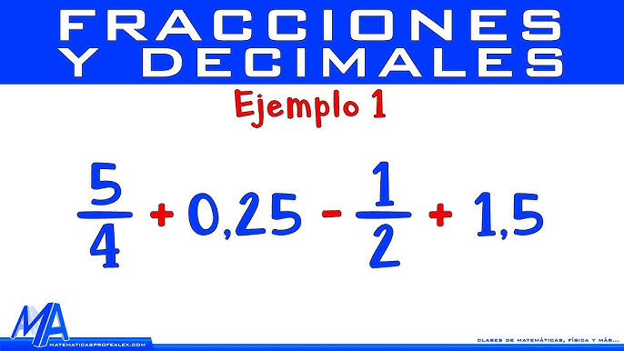

Números Decimales y las Fracciones.

Los números decimales son números cuyo valor de posición se basa en 10s. Los números enteros son en realidad números decimales que son mayores o iguales a cero. La tabla de los valores de posición puede extenderse para incluir los números menores que uno, que a veces son llamados fracciones decimales. Se usa un punto decimal para separar la parte del número entero y la parte del número fraccionario.
Digamos que estas midiendo la longitud de una calle y obtienes la medida de 745 pies. Llamarías éste número setecientos cuarenta y cinco. Después, una medición más exacta muestra que mide 745.36 pies. Pongamos éste número en la tabla de valores de posición.